Ch. 3 Aesthetics and Geometry
Last update: Fri Nov 6 11:33:28 2020 -0600 (420d787)
3.1 Aesthetic mappings
“The greatest value of a picture is when it forces us to notice what we never expected to see.” — John Tukey
In the plot below, one group of points (highlighted in red) seems to fall outside of the linear trend. These cars have a higher mileage than you might expect. How can you explain these cars?
ggplot(data=mpg, mapping=aes(x="displ", y="hwy")) +\
geom_point() +\
geom_point(data=mpg.query("displ > 5 & hwy > 20"), colour="red", size=2.2)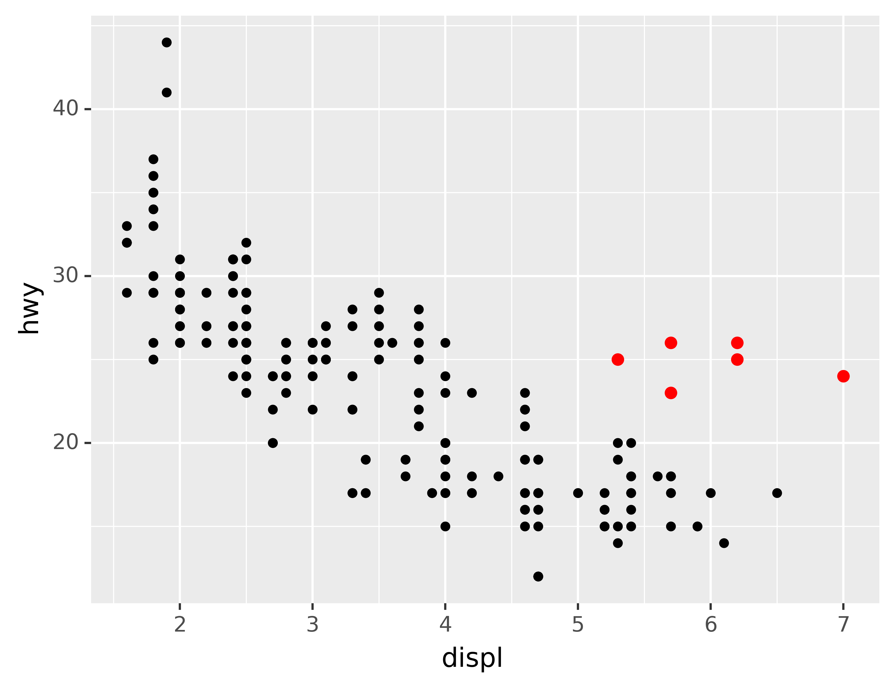
Let’s hypothesize that the cars are hybrids. One way to test this hypothesis is to look at the class value for each car. The class variable of the mpg dataset classifies cars into groups such as compact, midsize, and SUV. If the outlying points are hybrids, they should be classified as compact cars or, perhaps, subcompact cars (keep in mind that this data was collected before hybrid trucks and SUVs became popular).
You can add a third variable, like class, to a two dimensional scatterplot by mapping it to an aesthetic. An aesthetic is a visual property of the objects in your plot. Aesthetics include things like the size, the shape, or the color of your points. You can display a point (like the one below) in different ways by changing the values of its aesthetic properties. Since we already use the word “value” to describe data, let’s use the word “level” to describe aesthetic properties. Here we change the levels of a point’s size, shape, and color to make the point small, triangular, or blue:
def no_labels(x) :
return [""] * len(x)
df = pd.DataFrame({"x": [1, 2, 3, 4],
"y": [1, 1, 1, 1],
"size": [20, 10, 20, 20],
"shape": ["o", "o", "^", "o"],
"color": ["black", "black", "black", "blue"]})
ggplot(df, aes("x", "y", size="size", shape="shape", color="color")) +\
geom_point() +\
scale_x_continuous(limits=(0.5, 4.5), labels=no_labels) +\
scale_y_continuous(limits=(0.9, 1.1), labels=no_labels) +\
scale_size_identity() +\
scale_shape_identity() +\
scale_color_identity() +\
labs(x=None, y=None) +\
theme(aspect_ratio=1/3)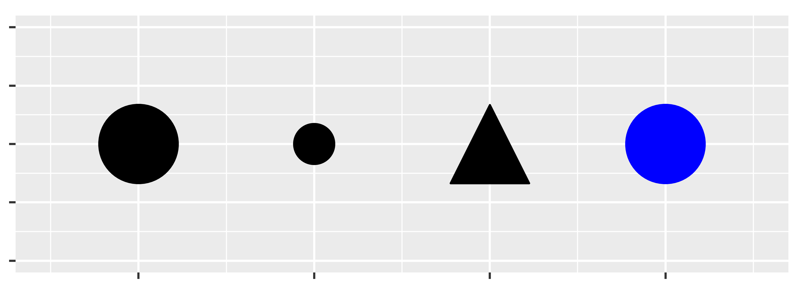
You can convey information about your data by mapping the aesthetics in your plot to the variables in your dataset. For example, you can map the colors of your points to the class variable to reveal the class of each car.
ggplot(data=mpg) +\
geom_point(mapping=aes(x="displ", y="hwy", color="class"))
(If you prefer British English, like Hadley, you can use colour instead of color.)
To map an aesthetic to a variable, associate the name of the aesthetic to the name of the variable inside aes(). plotnine will automatically assign a unique level of the aesthetic (here a unique color) to each unique value of the variable, a process known as scaling. plotnine will also add a legend that explains which levels correspond to which values.
The colors reveal that many of the unusual points are two-seater cars. These cars don’t seem like hybrids, and are, in fact, sports cars! Sports cars have large engines like SUVs and pickup trucks, but small bodies like midsize and compact cars, which improves their gas mileage. In hindsight, these cars were unlikely to be hybrids since they have large engines.
In the above example, we mapped class to the color aesthetic, but we could have mapped class to the size aesthetic in the same way. In this case, the exact size of each point would reveal its class affiliation. We get a warning here, because mapping an unordered variable (class) to an ordered aesthetic (size) is not a good idea.
ggplot(data=mpg) +\
geom_point(mapping=aes(x="displ", y="hwy", size="class"))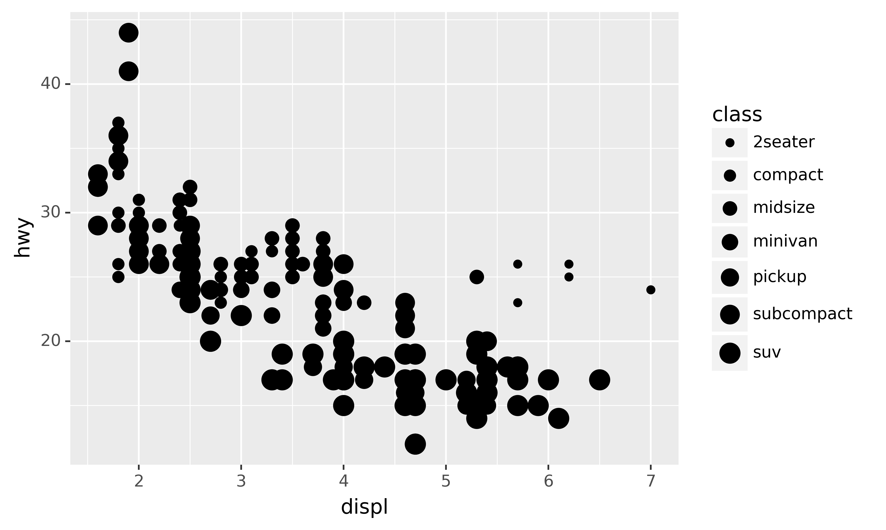
Similarly, we could have mapped manufacturer to the alpha aesthetic, which controls the transparency of the points, or to the shape aesthetic, which controls the shape of the points.6
ggplot(data=mpg) +\
geom_point(mapping=aes(x="displ", y="hwy", alpha="manufacturer"))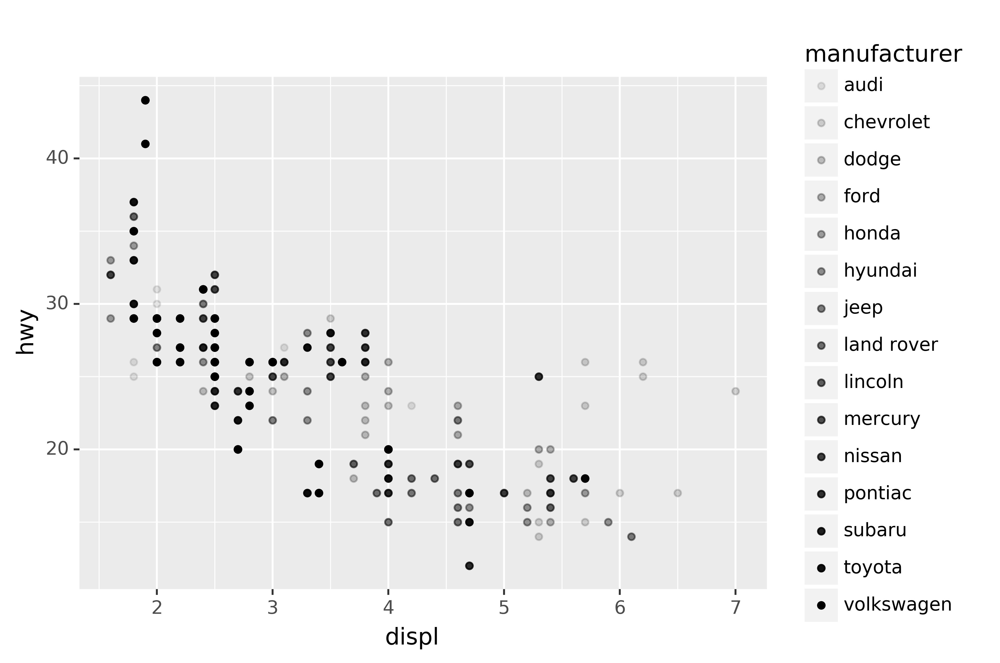
ggplot(data=mpg) +\
geom_point(mapping=aes(x="displ", y="hwy", shape="manufacturer"))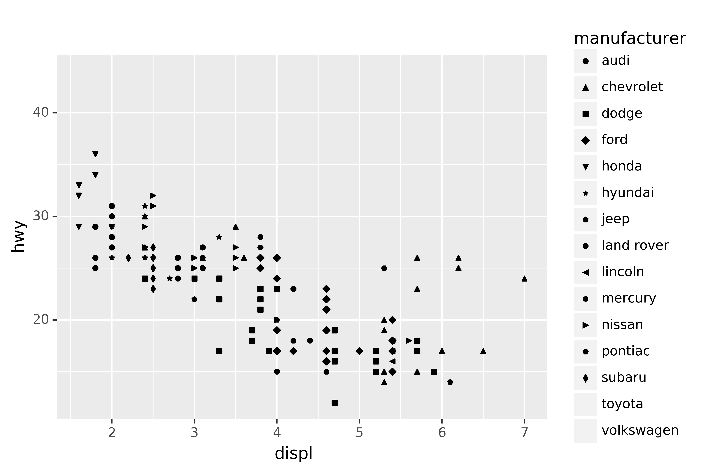
What happened to Toyota and Volkswagen? plotnine will only use 13 shapes at a time. By default, additional groups will go unplotted when you use the shape aesthetic.
For each aesthetic, you use aes() to associate the name of the aesthetic with a variable to display. The aes() function gathers together each of the aesthetic mappings used by a layer and passes them to the layer’s mapping argument. The syntax highlights a useful insight about x and y: the x and y locations of a point are themselves aesthetics, visual properties that you can map to variables to display information about the data.
Once you map an aesthetic, plotnine takes care of the rest. It selects a reasonable scale to use with the aesthetic, and it constructs a legend that explains the mapping between levels and values. For x and y aesthetics, plotnine does not create a legend, but it creates an axis line with tick marks and a label. The axis line acts as a legend; it explains the mapping between locations and values.
You can also set the aesthetic properties of your geom manually. For example, we can make all of the points in our plot blue:
ggplot(data=mpg) +\
geom_point(mapping=aes(x="displ", y="hwy"), color="blue")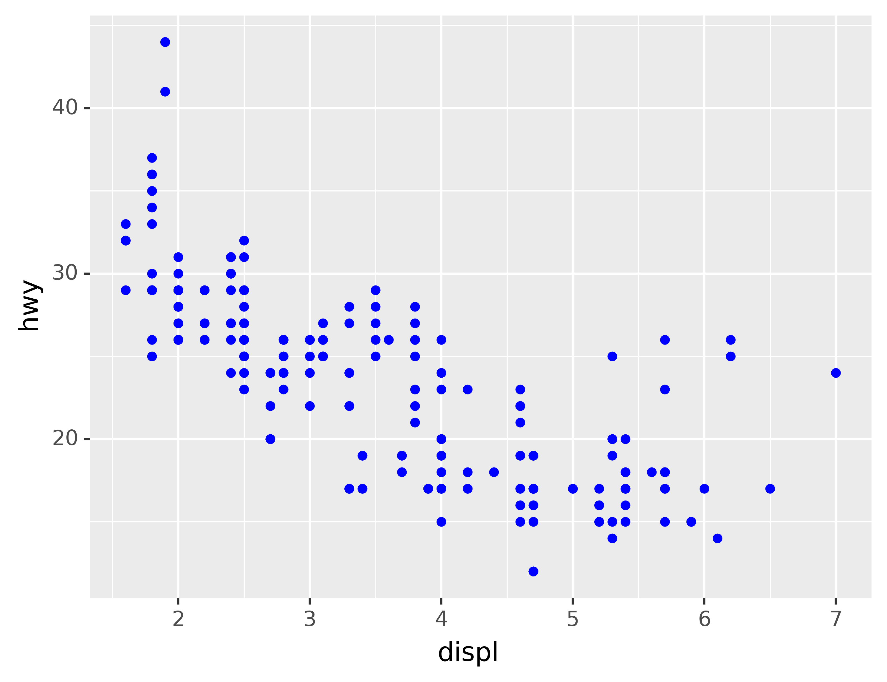
Here, the color doesn’t convey information about a variable, but only changes the appearance of the plot. To set an aesthetic manually, set the aesthetic by name as an argument of your geom function; i.e. it goes outside of aes(). You’ll need to pick a level that makes sense for that aesthetic:
- The name of a color as a string.
- The size of a point in mm.
- The shape of a point as a character or number, as shown below.
shapes = [".",",","o","v","^","<",">","1","2","3","4","8","s","p","P","*","h","H","+","x","X","D","d","|","_"] + list(range(12))
labels = ["'" + s + "'" for s in shapes[:25]] + [str(s) for s in range(12)]
df_shapes = pd.DataFrame({"x": [x // 6 for x in range(len(shapes))],
"y": [-(y % 6) for y in range(len(shapes))],
"shape": shapes,
"label": labels})
ggplot(df_shapes, aes("x", "y", shape="shape")) +\
geom_point(size=5) +\
geom_text(aes(label="label"), nudge_x=0.4, size=10, color='grey') +\
scale_shape_identity() +\
theme_void() +\
theme(aspect_ratio=1/2.75)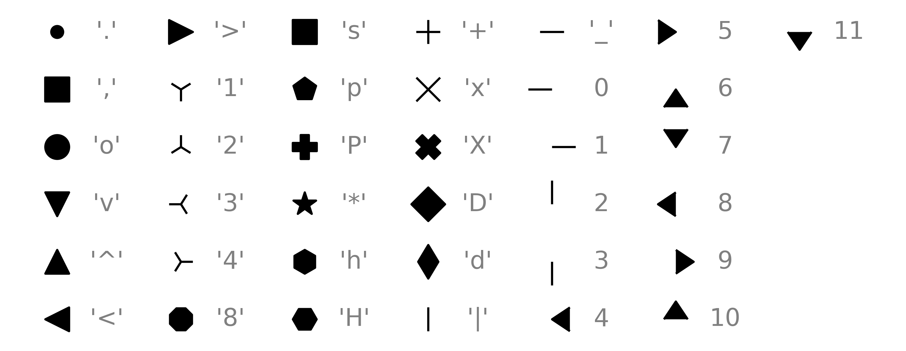
3.1.1 Exercises
(The original text has an additional exercise that contains code which is semantically wrong on purpose, but in plotnine, the corresponding code is also syntactically wrong. The reason is that in plotnine, you can only use column names in the aesthetic mapping and not literal values, e.g., aes(color="blue").)
Which variables in
mpgare categorical? Which variables are continuous? (Hint: type?mpgto read the documentation for the dataset). How can you see this information when you runmpg?Map a continuous variable to
color,size, andshape. How do these aesthetics behave differently for categorical vs. continuous variables?What happens if you map the same variable to multiple aesthetics?
What does the
strokeaesthetic do? What shapes does it work with? (Hint: use?geom_point)What happens if you map an aesthetic to something other than a variable name, like
aes(colour="displ < 5")? Note, you’ll also need to specify x and y.
3.2 Common problems
As you start to run Python code, you’re likely to run into problems. Don’t worry — it happens to everyone. I have been writing Python code for years, and every day I still write code that doesn’t work!
Start by carefully comparing the code that you’re running to the code in the book. Python is extremely picky, and a misplaced character can make all the difference. Make sure that every ( is matched with a ) and every " is paired with another ".
One common problem when creating plotnine graphics is to forget the \: it has to come at the end of the line. In other words, make sure you haven’t accidentally written code like this:
ggplot(data=mpg) +
geom_point(mapping=aes(x=displ, y=hwy))Alternatively, if you wrap the entire expression in parentheses then you can leave out the \:
(ggplot(data=mpg) +
geom_point(mapping=aes(x=displ, y=hwy)))If you’re still stuck, try the help. You can get help about any Python function by running ?function_name. Don’t worry if the help doesn’t seem that helpful - instead skip down to the examples and look for code that matches what you’re trying to do.
If that doesn’t help, carefully read the error message. Sometimes the answer will be buried there! But when you’re new to Python, the answer might be in the error message but you don’t yet know how to understand it. Another great tool is Google: try googling the error message, as it’s likely someone else has had the same problem, and has gotten help online.
3.3 Facets
One way to add additional variables is with aesthetics. Another way, particularly useful for categorical variables, is to split your plot into facets, subplots that each display one subset of the data.
To facet your plot by a single variable, use facet_wrap(). The first argument of facet_wrap() should be a formula, which you create with ~ followed by a variable name (here “formula” is the name of a data structure in Python, not a synonym for “equation”). The variable that you pass to facet_wrap() should be discrete.
ggplot(data=mpg) +\
geom_point(mapping=aes(x="displ", y="hwy")) +\
facet_wrap("class", nrow=2)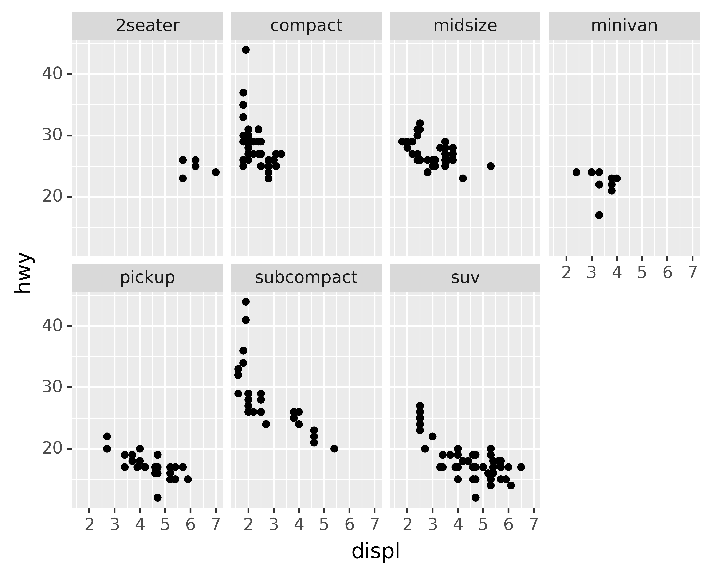
To facet your plot on the combination of two variables, add facet_grid() to your plot call. The first argument of facet_grid() is also a formula. This time the formula should contain two variable names separated by a ~.
ggplot(data=mpg) +\
geom_point(mapping=aes(x="displ", y="hwy")) +\
facet_grid("drv ~ cyl")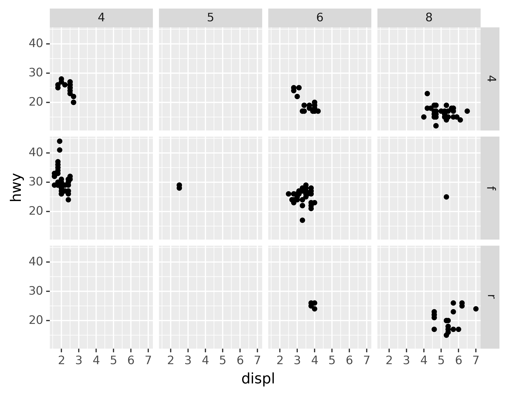
If you prefer to not facet in the rows or columns dimension, use a . instead of a variable name, e.g. + facet_grid(". ~ cyl").
3.3.1 Exercises
What happens if you facet on a continuous variable?
What do the empty cells in plot with
facet_grid("drv ~ cyl")mean? How do they relate to this plot?ggplot(data=mpg) +\ geom_point(mapping=aes(x="drv", y="cyl"))What plots does the following code make? What does
.do?ggplot(data=mpg) +\ geom_point(mapping=aes(x="displ", y="hwy")) +\ facet_grid("drv ~ .") ggplot(data=mpg) +\ geom_point(mapping=aes(x="displ", y="hwy")) +\ facet_grid(". ~ cyl")Take the first faceted plot in this section:
ggplot(data=mpg) +\ geom_point(mapping=aes(x="displ", y="hwy")) +\ facet_wrap("class", nrow=2)What are the advantages to using faceting instead of the colour aesthetic? What are the disadvantages? How might the balance change if you had a larger dataset?
Read
?facet_wrap. What doesnrowdo? What doesncoldo? What other options control the layout of the individual panels? Why doesn’tfacet_grid()havenrowandncolarguments?When using
facet_grid()you should usually put the variable with more unique levels in the columns. Why?What happens if you facet on a continuous variable?
What do the empty cells in plot with
facet_grid("drv ~ cyl")mean? How do they relate to this plot?ggplot(data=mpg) +\ geom_point(mapping=aes(x="drv", y="cyl"))What plots does the following code make? What does
.do?ggplot(data=mpg) +\ geom_point(mapping=aes(x="displ", y="hwy")) +\ facet_grid("drv ~ .") ggplot(data=mpg) +\ geom_point(mapping=aes(x="displ", y="hwy")) +\ facet_grid(". ~ cyl")Take the first faceted plot in this section:
ggplot(data=mpg) +\ geom_point(mapping=aes(x="displ", y="hwy")) +\ facet_wrap("class", nrow=2)What are the advantages to using faceting instead of the colour aesthetic? What are the disadvantages? How might the balance change if you had a larger dataset?
Read
?facet_wrap. What doesnrowdo? What doesncoldo? What other options control the layout of the individual panels? Why doesn’tfacet_grid()havenrowandncolarguments?When using
facet_grid()you should usually put the variable with more unique levels in the columns. Why?
3.4 Geometric objects
How are these two plots similar?
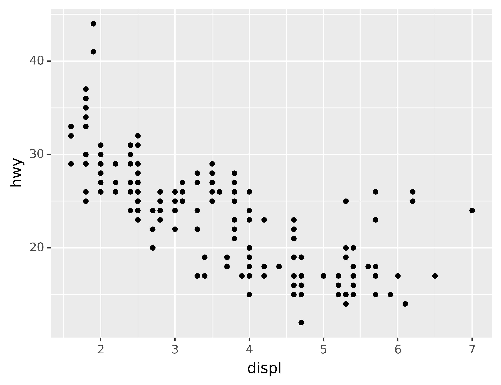
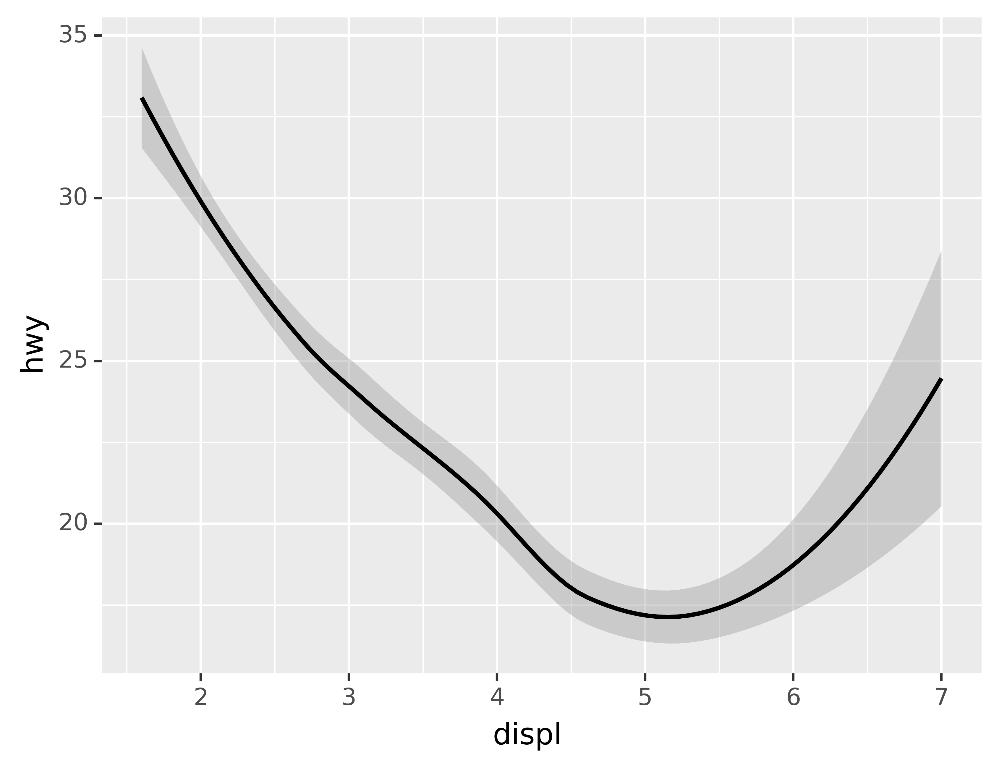
Both plots contain the same x variable, the same y variable, and both describe the same data. But the plots are not identical. Each plot uses a different visual object to represent the data. In plotnine syntax, we say that they use different geoms.
A geom is the geometrical object that a plot uses to represent data. People often describe plots by the type of geom that the plot uses. For example, bar charts use bar geoms, line charts use line geoms, boxplots use boxplot geoms, and so on. Scatterplots break the trend; they use the point geom. As we see above, you can use different geoms to plot the same data. The plot on the left uses the point geom, and the plot on the right uses the smooth geom, a smooth line fitted to the data.
To change the geom in your plot, change the geom function that you add to ggplot().
For instance, to make the plots above, you can use this code:
# Left
ggplot(data=mpg) +\
geom_point(mapping=aes(x="displ", y="hwy"))
# Right
ggplot(data=mpg) +\
geom_smooth(mapping=aes(x="displ", y="hwy"))Every geom function in plotnine takes a mapping argument. However, not every aesthetic works with every geom. You could set the shape of a point, but you couldn’t set the “shape” of a line. On the other hand, you could set the linetype of a line. geom_smooth() will draw a different line, with a different linetype, for each unique value of the variable that you map to linetype.
ggplot(data=mpg) +\
geom_smooth(mapping=aes(x="displ", y="hwy", linetype="drv"))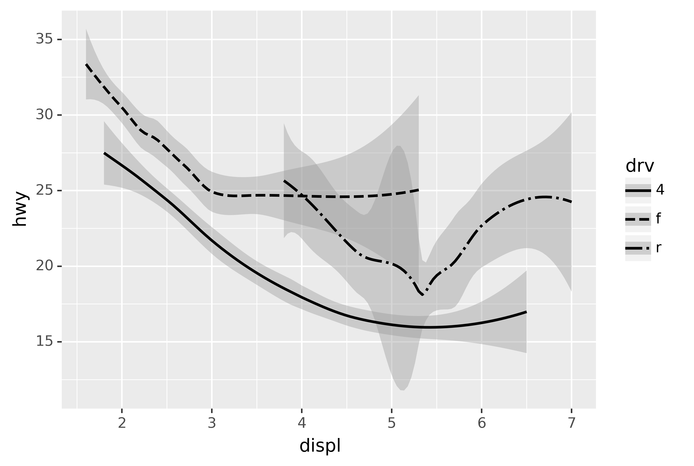
Here geom_smooth() separates the cars into three lines based on their drv value, which describes a car’s drivetrain. One line describes all of the points with a 4 value, one line describes all of the points with an f value, and one line describes all of the points with an r value. Here, 4 stands for four-wheel drive, f for front-wheel drive, and r for rear-wheel drive.
If this sounds strange, we can make it more clear by overlaying the lines on top of the raw data and then coloring everything according to drv.
ggplot(data=mpg, mapping=aes(x="displ", y="hwy", color="drv")) +\
geom_point() +\
geom_smooth(mapping=aes(linetype="drv"))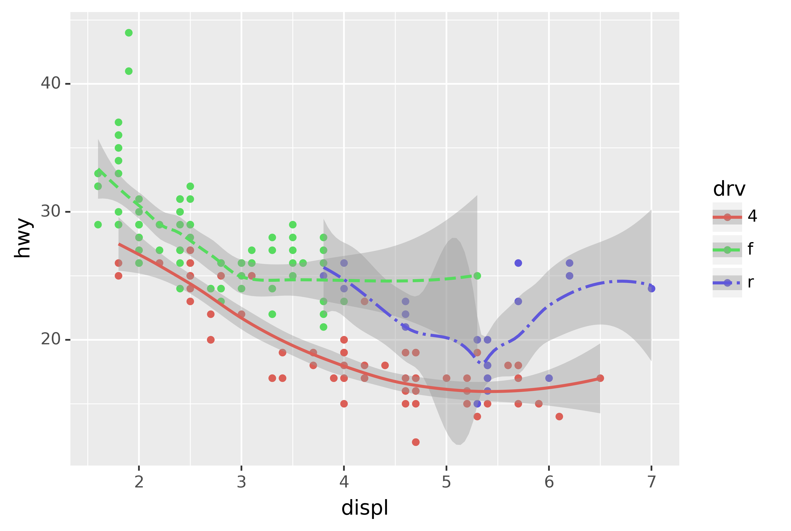
Notice that this plot contains two geoms in the same graph! If this makes you excited, buckle up. We will learn how to place multiple geoms in the same plot very soon.
plotnine provides over 30 geoms. The best way to get a comprehensive overview is the ggplot2 cheatsheet, which you can find at http://rstudio.com/cheatsheets. To learn more about any single geom, use help: ?geom_smooth.
Many geoms, like geom_smooth(), use a single geometric object to display multiple rows of data. For these geoms, you can set the group aesthetic to a categorical variable to draw multiple objects. plotnine will draw a separate object for each unique value of the grouping variable. In practice, plotnine will automatically group the data for these geoms whenever you map an aesthetic to a discrete variable (as in the linetype example). It is convenient to rely on this feature because the group aesthetic by itself does not add a legend or distinguishing features to the geoms.
ggplot(data=mpg) +\
geom_smooth(mapping=aes(x="displ", y="hwy"))ggplot(data=mpg) +\
geom_smooth(mapping=aes(x="displ", y="hwy", group="drv"))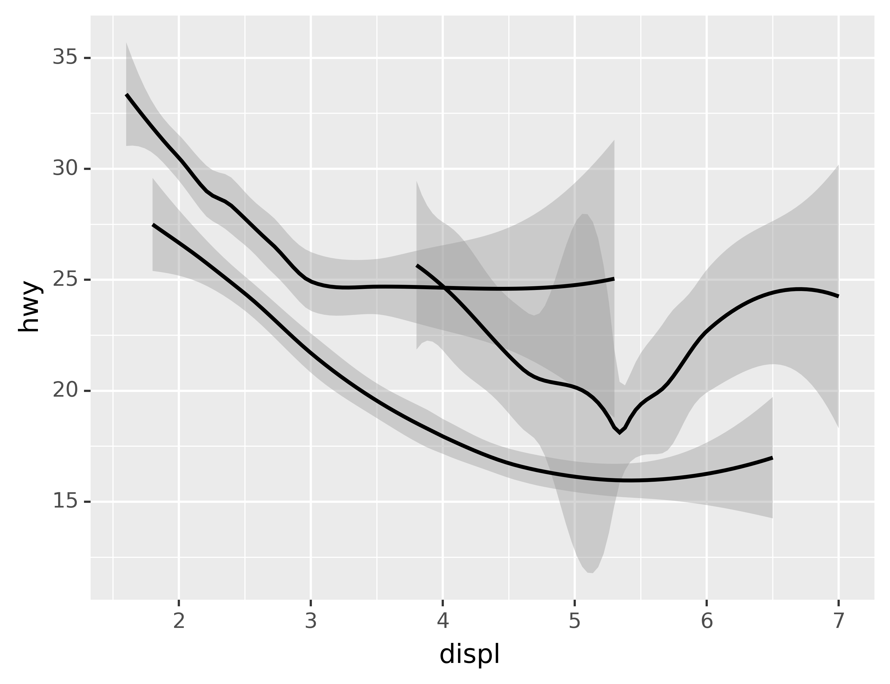
ggplot(data=mpg) +\
geom_smooth(mapping=aes(x="displ", y="hwy", color="drv"), show_legend=False)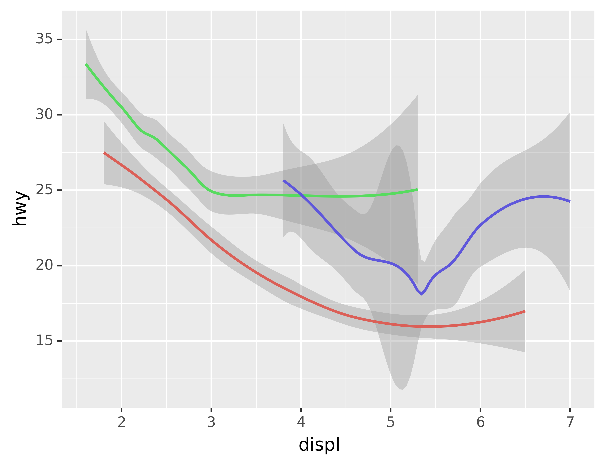
To display multiple geoms in the same plot, add multiple geom functions to ggplot():
ggplot(data=mpg) +\
geom_point(mapping=aes(x="displ", y="hwy")) +\
geom_smooth(mapping=aes(x="displ", y="hwy"))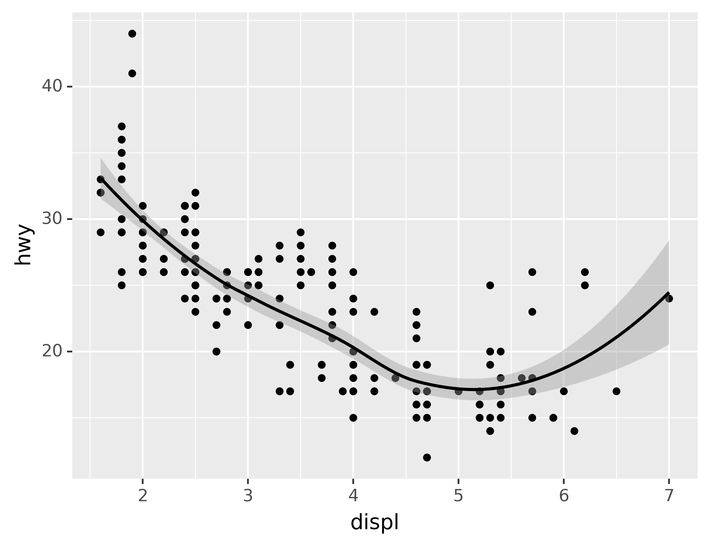
This, however, introduces some duplication in our code. Imagine if you wanted to change the y-axis to display cty instead of hwy. You’d need to change the variable in two places, and you might forget to update one. You can avoid this type of repetition by passing a set of mappings to ggplot(). plotnine will treat these mappings as global mappings that apply to each geom in the graph. In other words, this code will produce the same plot as the previous code:
ggplot(data=mpg, mapping=aes(x="displ", y="hwy")) +\
geom_point() +\
geom_smooth()If you place mappings in a geom function, plotnine will treat them as local mappings for the layer. It will use these mappings to extend or overwrite the global mappings for that layer only. This makes it possible to display different aesthetics in different layers.
ggplot(data=mpg, mapping=aes(x="displ", y="hwy")) +\
geom_point(mapping=aes(color="class")) +\
geom_smooth()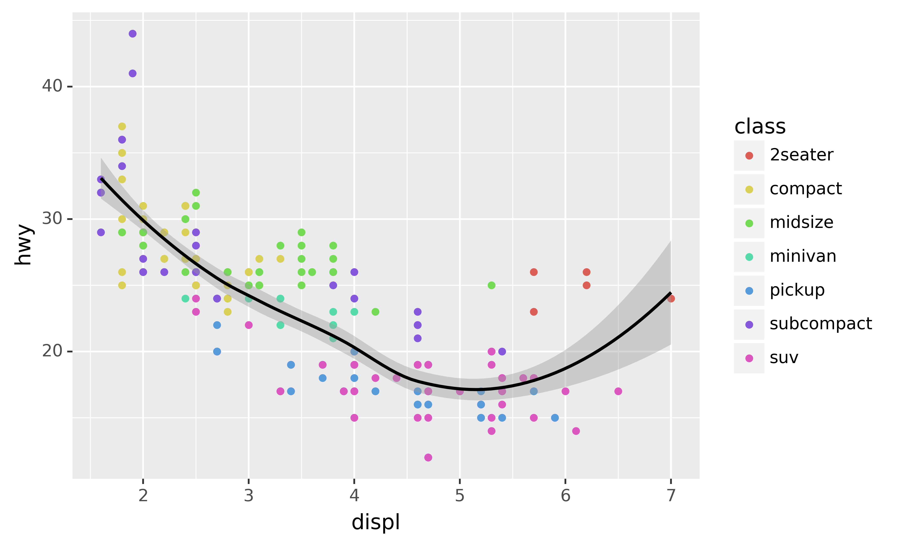
You can use the same idea to specify different data for each layer. Here, our smooth line displays just a subset of the mpg dataset, the subcompact cars. The local data argument in geom_smooth() overrides the global data argument in ggplot() for that layer only.
ggplot(data=mpg, mapping=aes(x="displ", y="hwy")) +\
geom_point(mapping=aes(color="class")) +\
geom_smooth(data=mpg.loc[mpg["class"] == "subcompact"], se=False)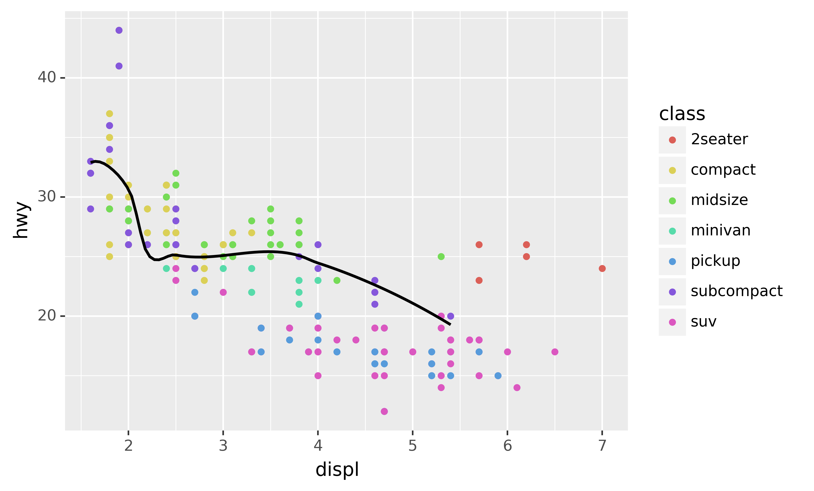
3.4.1 Exercises
What geom would you use to draw a line chart? A boxplot? A histogram? An area chart?
Run this code in your head and predict what the output will look like. Then, run the code in Python and check your predictions.
ggplot(data=mpg, mapping=aes(x="displ", y="hwy", color="drv")) +\ geom_point() +\ geom_smooth(se=False)What does
show_legend=Falsedo? What happens if you remove it? Why do you think I used it earlier in the chapter?What does the
seargument togeom_smooth()do?Will these two graphs look different? Why/why not?
ggplot(data=mpg, mapping=aes(x="displ", y="hwy")) +\ geom_point() +\ geom_smooth() ggplot() +\ geom_point(data=mpg, mapping=aes(x="displ", y="hwy")) +\ geom_smooth(data=mpg, mapping=aes(x="displ", y="hwy"))Recreate the Python code necessary to generate the following graphs.
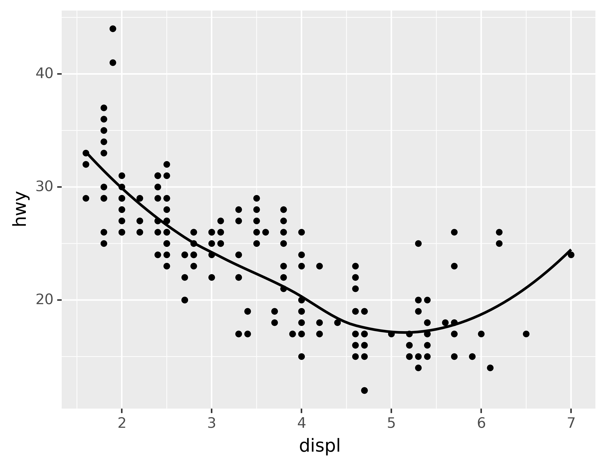
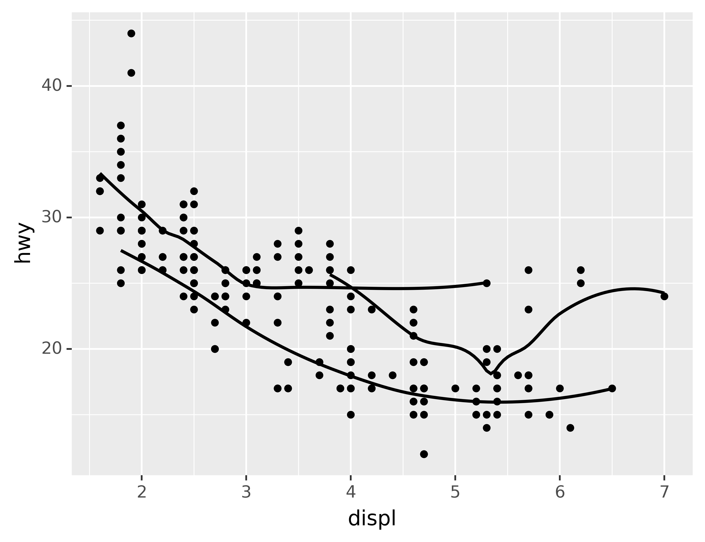
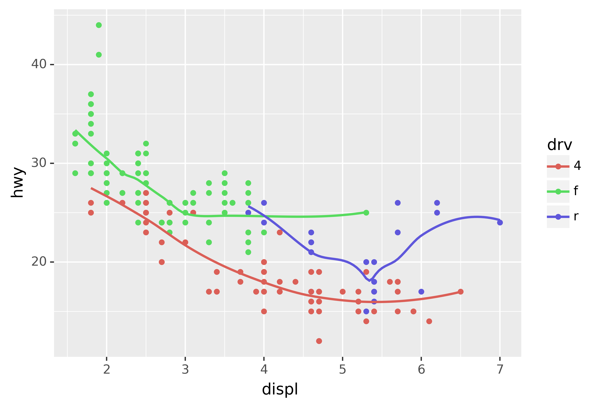
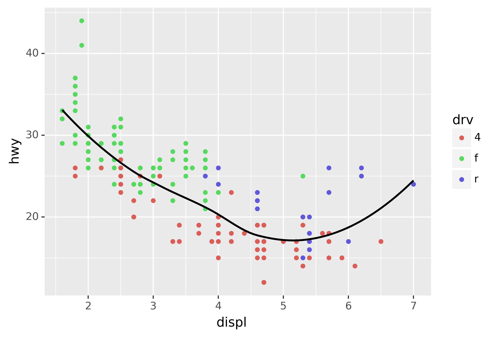
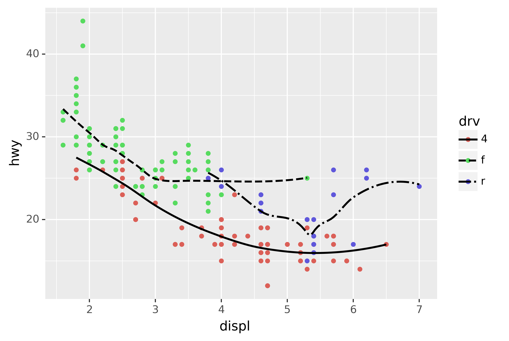 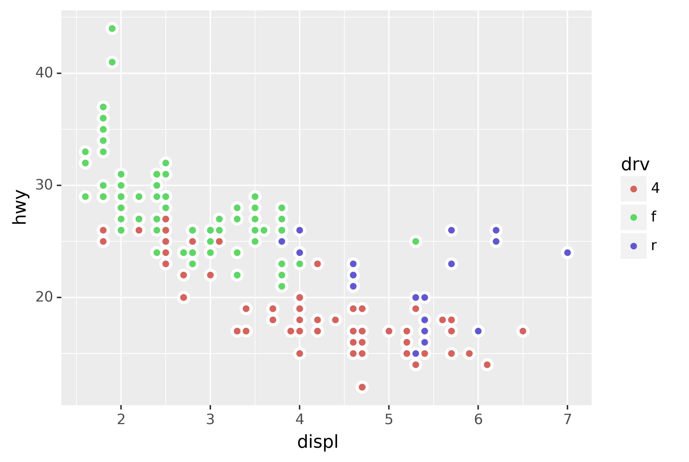
What geom would you use to draw a line chart? A boxplot? A histogram? An area chart?
Run this code in your head and predict what the output will look like. Then, run the code in Python and check your predictions.
ggplot(data=mpg, mapping=aes(x="displ", y="hwy", color="drv")) +\ geom_point() +\ geom_smooth(se=False)What does
show_legend=Falsedo? What happens if you remove it? Why do you think I used it earlier in the chapter?What does the
seargument togeom_smooth()do?Will these two graphs look different? Why/why not?
ggplot(data=mpg, mapping=aes(x="displ", y="hwy")) +\ geom_point() +\ geom_smooth() ggplot() +\ geom_point(data=mpg, mapping=aes(x="displ", y="hwy")) +\ geom_smooth(data=mpg, mapping=aes(x="displ", y="hwy"))
The original text uses the
classvariable, but to demonstrate the same effect we need to use a variable with more distinct values because plotnine supports more shapes than ggplot2.↩︎